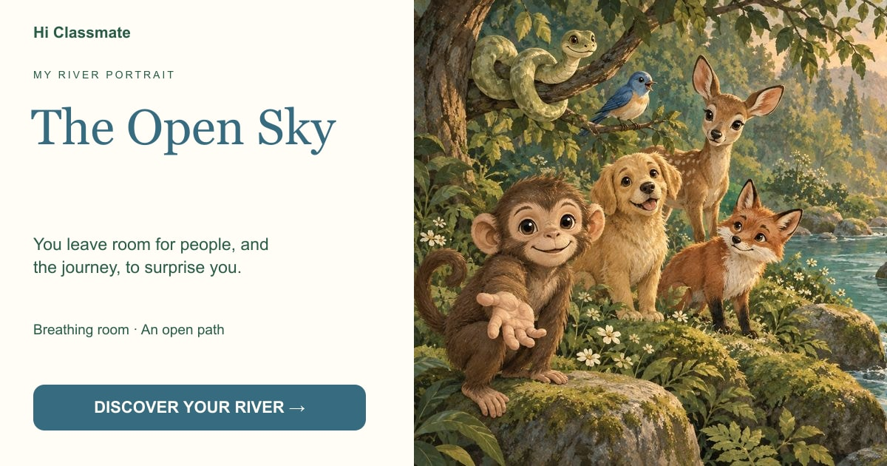

The Open Sky
You leave room for people, and the journey, to surprise you.

Your choices leaned toward independence and a patient, open pace. You may trust a bond without needing to direct every moment of it.
Begin my crossing →You leave room for people, and the journey, to surprise you.

Your choices leaned toward independence and a patient, open pace. You may trust a bond without needing to direct every moment of it.
Begin my crossing →